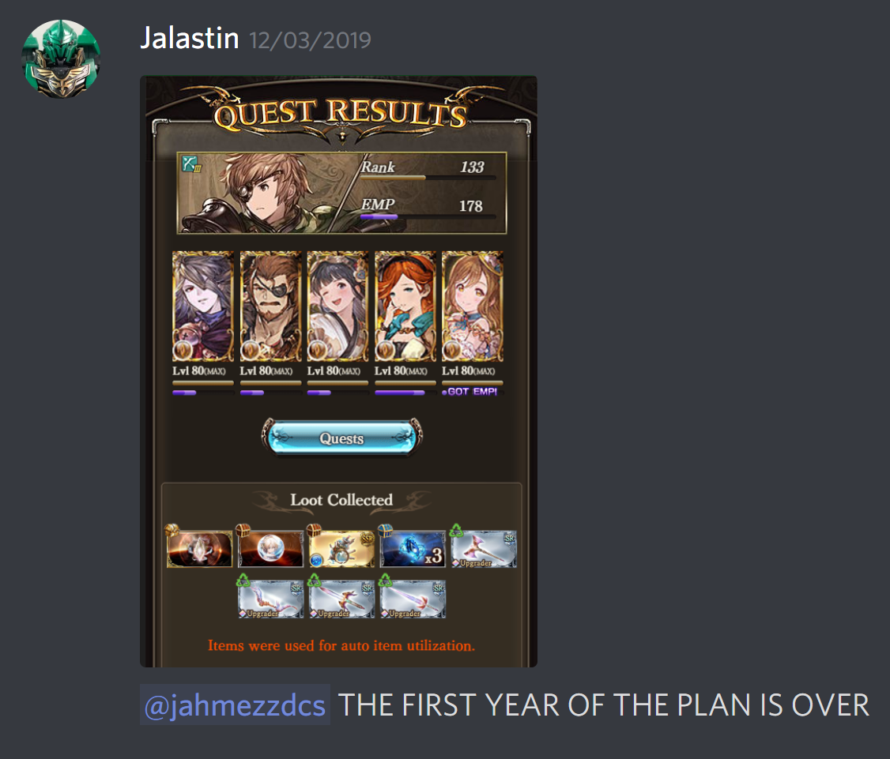
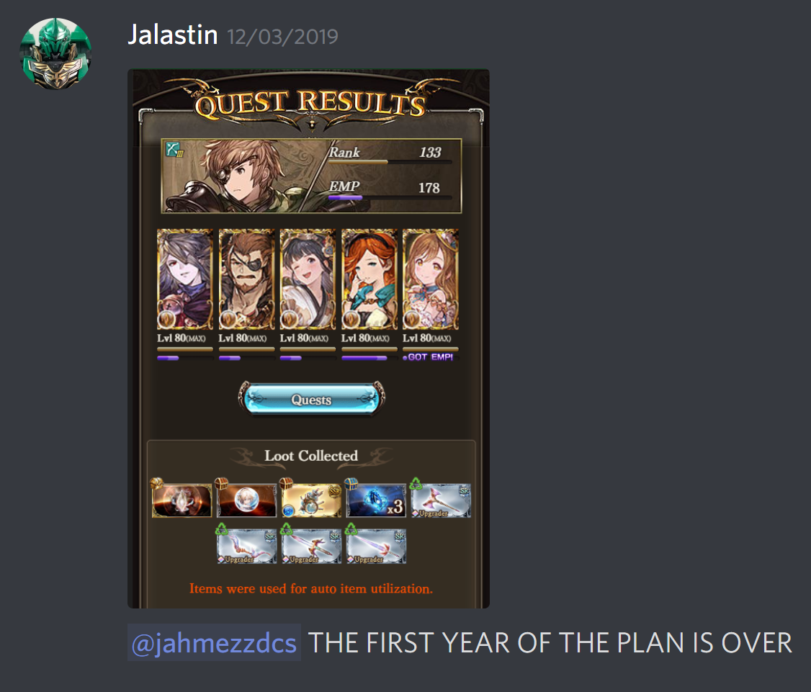

Jalastin's Granblue Stuff
Jalastin's Granblue Stuff
This was when I got myself addicted into Granblue. I sat down and planned 20 days of relentless grinding lead to 15 harps, which is more than the 12 drops I was aiming for.
| 11/17 | 11/18 | 11/19 | 11/20 | 11/21 | 11/22 | 11/23 | 11/24 | 11/25 | 11/26 | 11/27 | 11/28 | 11/29 | 11/30 | 12/01 | 12/02 | 12/03 | 12/04 | 12/05 | 12/06 |
|---|---|---|---|---|---|---|---|---|---|---|---|---|---|---|---|---|---|---|---|
| 0 | 0 | 0 | 1 | 0 | 0 | 1 | 1 | 2 | 0 | 1 | 0 | 1 | 1 | 0 | 2 | 2 | 1 | 1 | 1 |
| Total Drops | 15 | ||||||||||||||||||
| Total Days Taken | 20 |


 
